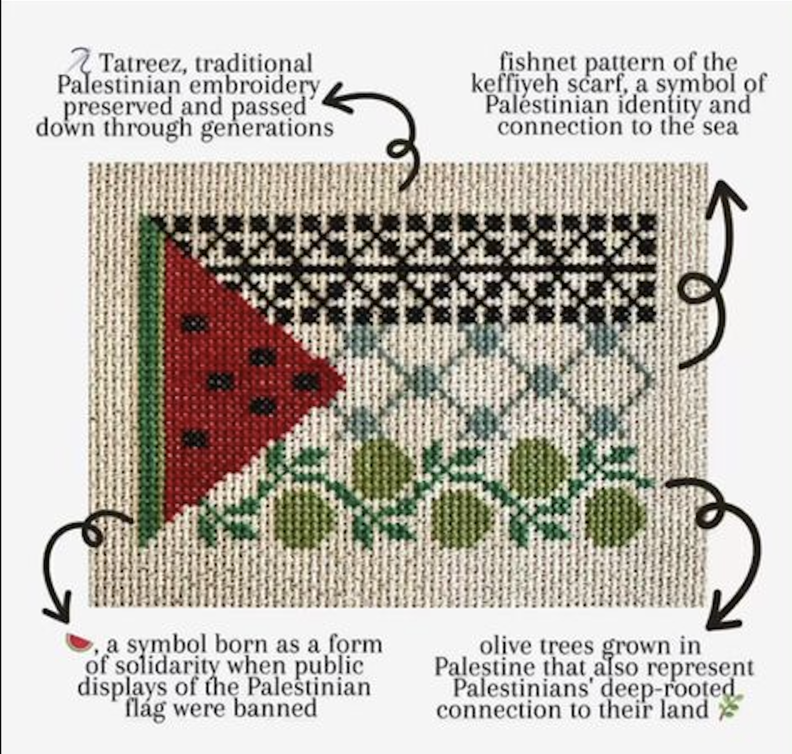

tatreez
Palestinian embroidery is a cherished cultural tradition deeply rooted in the history and identity of the Palestinian people. This art form, primarily practiced by Palestinian women, serves as a means of preserving heritage, storytelling, and expressing individual and collective identity. Passed down through generations, Palestinian embroidery features intricate designs, motifs, and stitches, each carrying symbolic meanings that reflect elements of nature, daily life, and Palestinian folklore.
The craftsmanship of Palestinian embroidery is characterized by meticulous attention to detail and a rich array of vibrant colors. Using traditional techniques such as cross-stitch, satin stitch, and chain stitch, artisans create intricate patterns on fabrics like linen, cotton, or wool. Each region within Palestine boasts its own distinct embroidery style, with unique motifs, colors, and stitches that reflect the local culture and heritage.
Beyond its cultural significance, Palestinian embroidery has transcended into a symbol of resilience and solidarity. It is not only an art form but also a form of activism, utilized in contemporary fashion, art, and advocacy efforts to raise awareness about Palestinian culture and the ongoing struggle for justice. Through its intricate beauty and enduring presence, Palestinian embroidery continues to serve as a powerful testament to the resilience, creativity, and cultural richness of the Palestinian people.